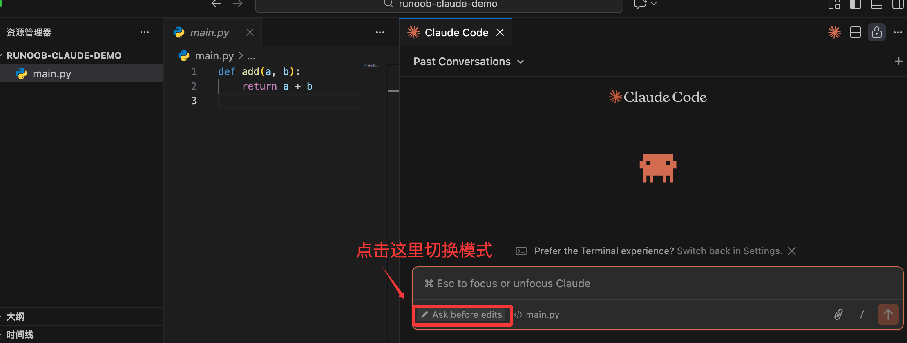
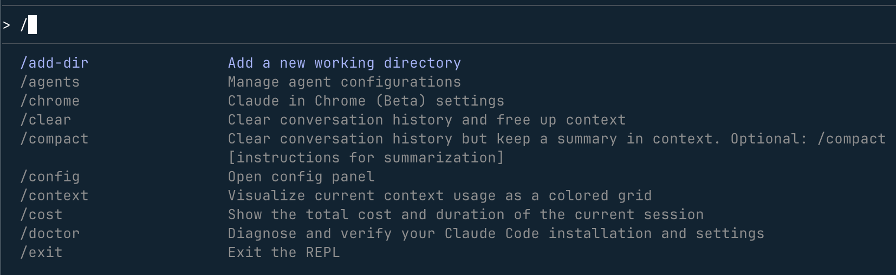

Claude Code 対話モード
ウェブ版Claudeとは異なり、Claude Codeは単なるチャットツールではなく、エンジニアリングコンテキスト、権限管理、実行能力を備えた開発コラボレーションシステムです。。
そのため、タスクを処理する際に、三つの主要な思考モードを導入しています。：
- Ask（質問）
- Plan（計画）
- Edit（編集）
この3つのモードの境界と役割を理解することが、Claude Codeを効率的かつ安全に使う鍵です。
ターミナル実行では実際には手動で切り替える必要はなく、Claudeが自動的に切り替えます。VS Codeプラグインでは手動でモードを切り替えることができます：

三大対話モードの詳細
ターミナルでClaude Codeを使用する際、あなたはモード切り替えを手動で行う必要はありません、Claudeは指示の内容に基づいて、現在どのモードに入るべきかを自動的に判断します。
ただし、利用者として、あなたはプロンプトで自分の意図を明確に伝える必要があります、そうしないとClaudeがあなたの期待と異なる行動を取りやすくなります。
1、Askモード：見るだけで動かさない（読み取り専用分析）
AskモードはClaude Codeのデフォルトのセーフモードです。
使用シーン
以下の状態のときは、Askモードを優先的に使用してください：
- 既存のコードが理解できない
- 新しいプロジェクトを引き継いだばかり
- Bugの原因を特定したいが、まだどう直すか考えていない
- あるロジックが合理的かどうかを確認したい
モードの特徴
- Claude コードを読み取ることができる
- 分析、説明、推論ができる
- いかなるファイルも絶対に変更しない
- いかなるShellコマンドも実行しない
Askモードは次のように理解できます：
経験豊富だが、両手を背後に置いたシニアエンジニア。
サンプル指示
解释一下 src/auth.ts 里的 JWT 验证流程
このプロジェクトでは、データベース接続はどこで初期化されていますか？
このコードはなぜ高並行環境で問題が発生する可能性があるのですか？
プロのアドバイス：
コードを変更すべきかどうか迷ったら、まずAskを使用しましょう。
2、Planモード：計画してから行動する（計画のみ、実行しない）
PlanモードはClaude Codeの中で最もアーキテクト思考に近いモードです。
使用シーン
あなたが直面しているのが複雑または影響範囲の大きい変更場合は、Planモードを使用すべきです。例：
- 新しいコアモジュールを追加する
- 既存のインターフェースやビジネスプロセスをリファクタリングする
- 新しい技術を導入する（キャッシュ、ミドルウェア、認証方式など）
- 複数のファイル、複数の階層にまたがる修正
モードの特徴
- Claudeは直接コードを変更しません
- 先に完全な実装計画
- 通常はステップリスト（TODOリスト）の形式で提示されます
- あなたが計画を確認した後に、Edit段階に入って実行します
Planモードの核心的な価値は次の点にあります：
「先にコードを書く」ことを「先に合意を形成する」ことに変える。
サンプル指示
我想给现有的 API 增加一个 Redis 缓存层，请先给我一个实施方案
计划一下如何把这个项目的样式从 CSS 改为 Tailwind CSS
このモジュールを分割する場合、合理的な手順はどうあるべきですか？
実践アドバイス：
Planモードを多く使うほど、手戻りの確率は低くなります。
3、Editモード：直接実行（コードを書ける）
EditモードはClaude Codeが実際に手を動かす段階です。
使用シーン
あなたがすでに明確に分かっている場合：
- どこを変更するか
- 何に変更するか
- 変更リスクが管理可能
このときは直接Editモードに入ることができます。
モードの特徴
- Claudeは関連ファイルを特定します
- 正確なDiff（差分変更）を生成します
- テストやビルドなどのコマンドの実行を要求する場合があります
- すべての書き込み操作にはあなたの確認が必要です
Editモードでは、あなたの役割は：
コードの最終レビュー担当者であり、傍観者ではありません。
サンプル指示
把登录接口的响应码从 200 改为 201
修复 main.py 第 45 行的类型错误
既存の動作を変更しない前提で、この関数の可読性を向上させるようにリファクタリングしてください。
プロの習慣：
説明が具体的であればあるほど、Claudeの変更は安全になります。
主要スラッシュコマンド（/）
スラッシュコマンドはClaude Codeのセッション状態と動作を制御するために使用されます、業務コードを書くためではありません。
ターミナルで/と入力するとトリガーされます。

| コマンド | 用途 | エキスパートのヒント |
|---|---|---|
/help |
すべてのコマンドを表示 | 初回使用時に必見 |
/cost |
現在のセッションの消費量を確認 | 無意識にTokenを消費するのを防ぐ |
/compact |
コンテキストを圧縮 | 会話が長くなり、遅くなったときに使用 |
/reset |
セッションをリセット | タスク切り替えのときに非常に重要 |
/docs |
ドキュメントをインデックス化 | Claudeに指定したドキュメントを参照させる |
/review |
コードレビュー | Gitステージングエリアの変更を確認 |
アドバイス：
/cost と /compact はヘビーユーザーの頻出コマンドです。
典型的な対話フローの例
実際の開発では、3つのモードはしばしば連続して使用されます。
サンプルフロー
1、Ask
为什么我的注册接口一直返回 400 错误？
Claudeがコードとログを分析し、email検証が欠けていると指摘します。
2、Plan
メール形式の検証を追加し、エラーメッセージを標準化したいのですが、どう進めますか？
Claudeが手順を提示：検証ロジックの修正 → テストの更新 → レスポンス構造の調整。
3、Edit
計画どおりに実行しましょう。
Claudeがファイルを変更し、確認用にDiffを表示します。
Askは問題を明確にすること、Planは遠回りを避けること、Editは慎重に実行することです。
対話中の権限確認メカニズム
Claude Codeはシステム操作に対して非常に慎重で、リスクのある行動はすべてあなたの確認を求めます。
よくある権限確認
-
ファイルへの書き込み
コードのDiffが表示され、確認後にのみ書き込みができます。 -
コマンドの実行
例えばnpm test、pnpm build、許可するかどうかを明確に尋ねます。
その他の拡張重要な注意事項：
Diffを確認せずに直接承認してはいけません。
Claudeは非常に強力ですが、それでもエラーや幻覚（ハルシネーション）を起こす可能性があります。